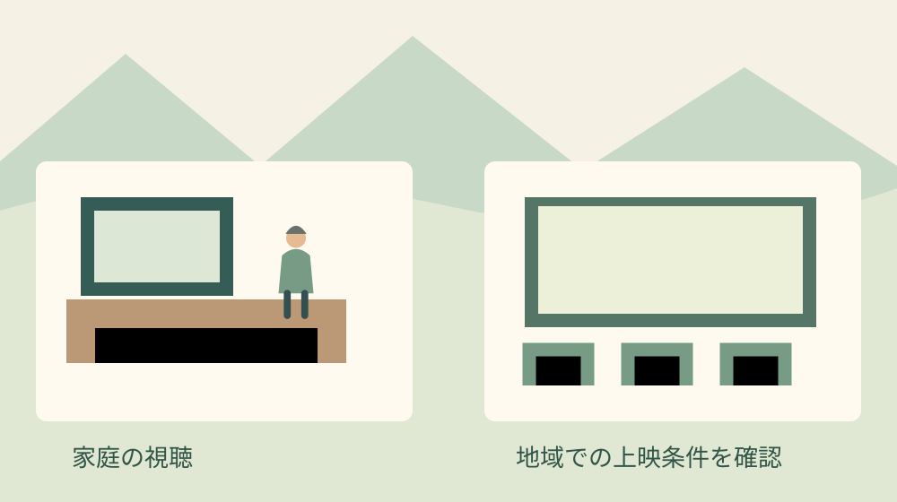

森町で映画上映会｜家庭用DVDとの違い
Q. 地域の上映会に、家のDVDを持っていけばよいですか？
家庭用DVDを持っているだけでは、地域の上映会での利用条件は決まりません。許諾なしで上映できる例外もありますが、無料という一点だけで判断しないこと。作品名、目的、観客、料金、会場、上映日を整理し、法的な条件とソフトの利用条件を確認してから準備を進めます。
会場を開ける人、椅子を並べる人、子どもの帰りを見送る人。地域の映画鑑賞は、画面に映らない仕事に支えられています。担当を引き受けた方が、上映直前になって作品を変更する事態は避けたいところです。忙しい中で催しをつないできた負担を、私はまず認めたいと思います。
私は大石浩之（磐田市／不動産業）です。森町の外に住みながら、地域の家や暮らしに関わる立場で書いています。今回は映画作品のおすすめではなく、家庭で見るDVDと地域で上映する場合の準備の違いを整理します。確認日は2026年10月31日です。
森町の映画鑑賞予定から、準備の違いを考える
森町の「令和8年度令和学級のご案内」には、年度の最終回に映画鑑賞が載っています。2026年3月31日更新の年間予定表は、2月18日を「となりのトトロ」と閉級式の日としています。令和8年度の案内であり、秋の単独上映会の募集ではありません。
町の案内には、作品ごとの権利処理や使用するソフトの条件は掲載されていません。掲載がないことから、許諾の有無や方法は判断できません。町の催しで予定されている作品だから、別の団体も同じ方法で上映できるという意味にもなりません。
令和学級への参加を検討する方には、令和学級の文化講座と参加確認で募集時期と問い合わせの整理をしています。本記事の問いは、子ども会や地域団体が自分たちで上映会を組む場合に、何を確認するかです。
私が惜しいと感じるのは、作品を決める楽しさより先に、不安だけが膨らむことです。反対に「町でもやっているから大丈夫」と飛ばすのも心配です。今日の段階では、上映の可否を決めるより、相談先へ伝えられる一枚の条件表を作る方が準備を前へ進められます。

家庭用DVDと上映用ソフトは、購入目的が違う
日本映像ソフト協会の「上映・業務用をご利用になるには」は、市販・レンタル用と上映用のソフトを分けて案内しています。家庭向けの商品を購入したり借りたりすることだけでは、上映用の許諾まで得たことにはならない、という整理です。同ページには更新日の表示がありません。
同協会は、一定の例外を除いて権利者の許諾が必要と説明しています。上映用の作品、利用条件、料金、入手方法はメーカーへ確認する案内です。同じ作品名でも、手元のディスクを持参すれば手続きが終わるとは考えず、使うソフトと上映条件を一緒に確認します。
私なら、最初の打ち合わせでDVDの持ち主を探す前に、作品名と発売元をメモします。家にある物を使えば費用が浮く、という感覚は自然です。ただ、その節約額を見込んで会場や印刷を発注すると、条件が合わなかった際の変更作業まで担当者が背負います。
確認する順番は、作品の候補、上映の条件、ソフトの入手方法です。上映用ソフトが用意される場合でも、利用できる日数や回数、会場などは問い合わせで確かめます。「上映用」という呼び名だけから、翌年も別会場でも自由に使えると読み替えないようにします。
無料上映にも、確かめる条件がある
文化庁「著作権テキスト 令和8年度版」の84ページは、著作権法第38条第1項の例外を説明しています。公表済みの作品を、営利を目的とせず、観客から料金等を受けず、出演者等への報酬がない場合の上映などが対象です。慣行がある場合の出所明示も挙げています。
この例外があるため、地域での映画上映をすべて許諾必須とは断定できません。一方で、入場無料という表示だけでも結論は出ません。団体の名前や善意だけで決めず、催し全体の目的、徴収するお金の性格、出演者等への支払いを整理して判断する必要があります。
同テキストの85ページは、料金を名目だけで区別していません。作品の提供の対価かどうかを見ます。会場費に充てるお金でも該当し得る一方、作品の提供の対価でない費用まで一律に料金とする説明でもありません。会費や実費という名称だけで可否は判断できません。
私の提案は、お金を集める場合、名称だけでなく用途と参加条件を書くことです。誰から何のために集め、払わない方は鑑賞できるのか。飲食代や会費を含む企画なら、その関係も隠さず伝えます。この記事で個別の会計方式が適法かどうかを決めることはできません。
出演者等への報酬という条件も、運営費の支出すべてを同じものと扱う話ではありません。何の仕事への支払いなのかを分けて整理します。例外への該当性に迷いが残る場合は、条件表をもとに著作権に詳しい専門家へ確認してください。権利者側には利用許諾の条件を尋ねます。
文化庁の説明では、この例外に複製や公衆送信は含まれません。会場での上映と、作品をコピーして配ることやネットへ送ることを一緒に扱わないことです。開催記録を残したい場合も、画面に映る作品をどう扱うかは上映とは別の確認欄を設けます。
良い点は、担当者が条件を切り分けられること
日本映像ソフト協会の案内で私が良いと感じるのは、作品の入手と利用条件を同じ相談にできることです。担当者が作品ごとに問い合わせる入口を持てます。家庭の持ち物を集めてから困る形より、使える作品と準備に必要な期間を早い段階で並べやすくなります。
法の例外を知ることにも意味があります。私は、地域活動だから何でも自由という説明も、手続きが難しいから諦めようという説明も避けたい。条件を確かめる余地があると分かれば、担当者は疑問を具体的な言葉にできます。何が未確定かを分けるだけでも、役割を頼みやすくなります。
会場の担当者、作品の問い合わせ先、団体の会計担当が同じ資料を見ることにも利点があります。会場だけが知っている予定と、作品側に伝えた予定が食い違うと、間に立つ人の負担になります。私は、決まった項目に確認日を添えるだけの小さな表でも役立つと考えています。
注文したい点は、確認作業を一人に寄せないこと
地域の上映会で私が注文したいのは、作品選び、会場予約、会計、広報の情報を一人の頭の中に集めないことです。問い合わせの返事を待つ人が、椅子の運搬も印刷も担う形では続けにくい。今日できる一歩は、回答を受け取る担当と、団体内へ共有する担当を決めることです。
同協会は、映画に使われる音楽について別の権利処理が必要となる場合も案内しています。作品の窓口へ、今回の利用で何が含まれ、何を別に確認するのかを尋ねます。祭りで音楽を流す場合の準備は、祭りの音楽利用と手続きに分けています。
私は、確認項目を増やせば必ず催しが良くなるとは思っていません。書類を整えるだけで夜が終わってしまう負担もあります。どこまで細かく書くかは迷いますが、作品名、利用日、料金、回答の範囲だけは省かない。この四つが曖昧だと、担当交代の際に同じ問い合わせを繰り返すためです。
上映条件を一枚に書くための六つの欄
上映の条件表は、団体内で分かっている事実と未定の項目を分ける資料です。以下は私の提案する下書きで、許諾申請の正式書式ではありません。問い合わせ先に指定の用紙がある場合は、その用紙へ転記します。空欄を推測で埋めず、未定と書いて相談します。
- 作品：題名、版、発売元、使いたい媒体。
- 利用：上映日、回数、上映する範囲。
- 場所：施設名、部屋、予定する観客数。
- 対象：誰を招くか、一般募集をするか。
- お金：入場料、会費、飲食代、支払いの内容。
- 目的：主催者、開催目的、広報や記録の方法。
作品名は、略称だけでなくパッケージにある表記を写します。同じ題名の別作品や、長さの違う版を取り違えないためです。媒体もDVDなのか別の形式なのかを記録します。手元にソフトがない場合は、持っているように書かず、入手方法から相談したいと伝えます。
観客については、子ども会の登録者と家族だけなのか、町内で広く募集するのかを書き分けます。人数が未定なら、会場の定員と想定数を別に書きます。参加者の個人名簿まで初回の相談に添える必要はなく、利用条件を説明するための範囲を伝える形で十分です。
回答を受けたら、上映できる範囲と、まだ答えがない範囲を色分けして残します。電話の内容は担当者名と日時をメモし、理解が曖昧な条件は言葉を確かめます。許諾の条件が示された場合は、条件書などを担当者間で参照できる場所に保存する運用を提案します。
会場予約と上映の確認は、別々に進める
森町文化会館の「利用案内」は、利用時間に準備や片付けの時間も含むと案内しています。2026年10月15日更新のページです。作品の上映時間だけで部屋を借りる枠を考えると、機材設置や撤収を収めにくくなるため、会場へ相談する際は前後の作業も伝えます。
会場を利用できることと、作品をその条件で上映できることは、確認する相手も内容も違います。部屋の予約が済んだから作品の確認も済んだ、と引き継がないようにします。施設の入口や利用手続きは、森町文化会館の利用案内を読む記事も参照できます。
私なら、会場相談の際に、プロジェクターや音響を持ち込むのか、借りるのかを先に伝えます。暗くできるか、字幕が見える位置に座れるか、出入口まで安全に歩けるかも確認したい項目です。地域の担当者が、当日になって機材と椅子を何度も動かす負担を減らすためです。
機材の接続確認と、映画作品の利用確認も分けます。機器が動くことを確かめるために、作品を複製する前提で準備しません。接続や画面の確認には利用できる試験素材を用意し、本番の媒体で何を試せるかは利用条件に沿って確認します。映像が出ることだけを上映準備の完了にしない考え方です。
森町で集まる催しでは、上映後の移動も準備の一部です。子どもの迎えを待つ場所や、帰りの連絡を誰が受けるかは、作品の権利とは別の実務です。私は、終了時刻と片付け終了の目安を分けて共有し、迎えの担当と撤収の担当を重ねすぎない段取りを提案します。
対案・結論：予算と広報は回答を待つ部分を分ける
上映会の予算は、作品に関する費用、会場、機器、印刷、運搬に分けると確認しやすくなります。これは私の費目整理の提案です。本記事では、森町での上映料や作品ごとの価格は確認していません。無料、定額、何人でも同額といった条件を、見積り前から書き込まないことです。
広報用の画像や作品紹介文についても、使いたい場所と方法を問い合わせに添えます。チラシ、掲示板、団体のウェブページでは掲載先が違います。上映の相談をしただけで、手元のジャケット写真をすべての告知に使えると判断せず、利用できる素材と表記方法を確かめる手順を勧めます。
私は、作品が確定するまで何もできないとは考えていません。会場の候補、手伝える人、機材の所在は先に整理できます。一方で、作品名を入れた大量印刷や変更しにくい発注は、回答がそろう時期と合わせたい。支出を急ぐより、いつ何が決まれば発注できるかを決めます。
問い合わせの条件が合わなければ、別作品や別日を検討する余地を残します。その際も、似た作品なら同じ扱いだろうと前の回答を使い回しません。候補を変更した日と変更箇所を条件表へ書き、関係する相手だけに確認します。全員へ最初から説明し直す手間を少なくするためです。
大石の視点：今日、作品名と条件を書き出す
地域の上映会を続けるには、担当者の熱意に準備の曖昧さを背負わせないことだと私は考えます。不動産の仕事でも、使いたいという希望と、実際に使える条件を分けて考えます。上映会も、候補作品を否定するためではなく、会場代や人の時間を無駄にしないために条件を先に並べたいのです。
私は今回の上映を担当したわけでも、権利者と交渉したわけでもありません。ここで述べたのは、公開資料を読んだ一事業者としての意見です。各団体が予定する上映の可否や、町の講座の個別の権利処理を断定する材料は持っていません。その線は残したまま、準備の順番を提案しています。
今日の小さな一歩は、作品名と上映条件を一枚に書くことです。分からない欄には未確認と書けば十分です。家庭のDVDを持っていけるかという問いを、いつ、誰に、どんな条件で見せたいかという問いに変える。担当者が返事を受けて動ける形になれば、今日の準備は前進しています。
よくある質問
無料の上映会なら、許諾は不要ですか？
無料という一点だけでは判断できません。文化庁の解説は、公表済みの作品、非営利、観客から料金等を受けないこと、出演者等への報酬がないことなどを例外の条件に挙げています。会費や実費も名称だけで扱いは決まりません。目的と金銭の内容を整理し、個別の該当性に迷う場合は著作権に詳しい専門家へ確認してください。
家庭用DVDを持参すれば上映できますか？
DVDを持っていることだけでは、地域の上映条件は決まりません。日本映像ソフト協会は家庭向けと上映用のソフトを区別しています。法の例外に当たるかどうかと、利用するソフトの条件を整理してください。上映用の作品や料金、入手方法はメーカーへの確認が案内されています。作品名と予定日、観客、費用を伝えると相談しやすくなります。
会場を予約すれば、作品の手続きも済みますか？
会場の利用と映画作品の利用は別の確認です。部屋の予約だけで、作品の上映条件まで確認したことにはなりません。会場側には機材と準備・片付けの時間を、作品側には上映の日時や回数、観客、料金などを伝えます。告知画像や記録方法も確認欄を分け、回答の範囲を団体内で共有してから印刷などの発注を進めることを勧めます。
出典・確認日
- 森町：令和8年度令和学級のご案内（2026年10月31日確認）
- 日本映像ソフト協会：上映・業務用をご利用になるには（2026年10月31日確認）
- 文化庁：著作権テキスト 令和8年度版（84・85ページ）（2026年10月31日確認）
- 森町：森町文化会館 利用案内（2026年10月31日確認）
催しの予定や料金・制度は変更される場合があります。個別の利用条件は主催者へ、専門的な判断が必要な事項は適切な専門家へご相談ください。